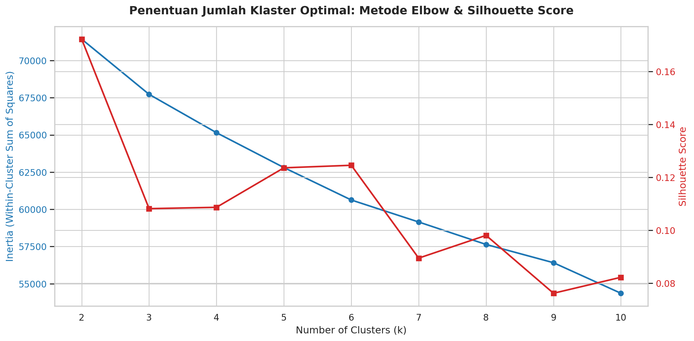
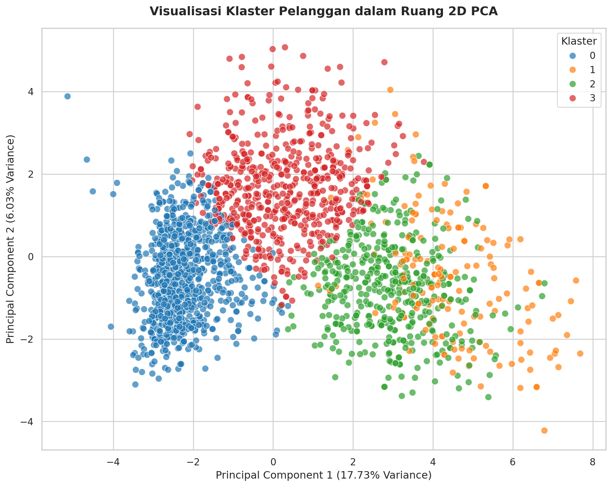

Customer Personality Analysis: Segmentasi Pelanggan Menggunakan Unsupervised Learning
Penulis
Antigravity
Diterbitkan
28 Mei 2026
1. Pendahuluan
Segmentasi pelanggan adalah salah satu aplikasi terpenting dari analisis data dalam bisnis modern. Dengan membagi basis pelanggan menjadi kelompok-kelompok yang memiliki karakteristik serupa (homogen di dalam kelompok, heterogen antar kelompok), perusahaan dapat merancang strategi pemasaran yang lebih personal, menargetkan produk yang relevan, meningkatkan retensi pelanggan, dan mengoptimalkan anggaran promosi.
Laporan ini menyajikan analisis segmentasi pelanggan menggunakan teknik Unsupervised Learning pada dataset Customer Personality Analysis (cpa.csv). Dokumen ini disusun menggunakan prinsip Literate Programming, di mana teori dasar dari setiap langkah analisis disajikan bersama dengan kode implementasi Python dan visualisasinya.
2. Pemrosesan Data & Rekayasa Fitur
Sebelum menerapkan algoritme klasterisasi, data mentah harus diproses terlebih dahulu agar memenuhi asumsi-asumsi matematis dari algoritme jarak seperti K-Means.
Step 1: Pemuatan Dataset
Langkah pertama adalah memuat dataset ke dalam memory menggunakan pustaka pandas. Dataset ini berformat tab-separated values (TSV).
Kode
import pandas as pdimport numpy as npimport osimport matplotlib.pyplot as pltimport seaborn as snsfrom sklearn.preprocessing import StandardScaler, OneHotEncoderfrom sklearn.impute import SimpleImputerfrom sklearn.cluster import KMeansfrom sklearn.metrics import silhouette_scorefrom sklearn.decomposition import PCA# Mengatur tema plot agar estetis dan bersihsns.set_theme(style="whitegrid")plt.rcParams['figure.figsize'] = [10, 6]# Membaca datasetdf = pd.read_csv("cpa.csv", sep="\t")print(f"Dataset berhasil dimuat dengan ukuran: {df.shape[0]} baris dan {df.shape[1]} kolom.")
Dataset berhasil dimuat dengan ukuran: 2240 baris dan 29 kolom.
Step 2: Eksplorasi Awal (Exploratory Data Analysis)
Teori
Eksplorasi awal bertujuan untuk mendeteksi:
Missing values: Sebagian besar algoritme machine learning dalam scikit-learn tidak dapat menangani nilai kosong secara langsung.
Statistik Deskriptif: Memahami rentang nilai, rata-rata, dan penyebaran data untuk mendeteksi pencilan (outliers).
Kolom Konstan: Kolom yang tidak memiliki variansi (misalnya, semua baris bernilai sama) tidak memberikan informasi apa pun dalam analisis pengelompokan dan harus dihapus.
Kode
# Menampilkan 3 baris pertama datadf.head(3)
Tabel 1: Tiga Baris Pertama Dataset CPA
ID
Year_Birth
Education
Marital_Status
Income
Kidhome
Teenhome
Dt_Customer
Recency
MntWines
...
NumWebVisitsMonth
AcceptedCmp3
AcceptedCmp4
AcceptedCmp5
AcceptedCmp1
AcceptedCmp2
Complain
Z_CostContact
Z_Revenue
Response
0
5524
1957
Graduation
Single
58138.0
0
0
04-09-2012
58
635
...
7
0
0
0
0
0
0
3
11
1
1
2174
1954
Graduation
Single
46344.0
1
1
08-03-2014
38
11
...
5
0
0
0
0
0
0
3
11
0
2
4141
1965
Graduation
Together
71613.0
0
0
21-08-2013
26
426
...
4
0
0
0
0
0
0
3
11
0
3 rows × 29 columns
Kode
# Memeriksa missing valuesmissing_info = df.isnull().sum()print("Kolom dengan nilai kosong:")print(missing_info[missing_info >0])
Tabel 2: Identifikasi Nilai Kosong pada Dataset
Kolom dengan nilai kosong:
Income 24
dtype: int64
Ditemukan terdapat 24 nilai kosong pada kolom Income. Kita harus melakukan imputasi pada langkah berikutnya.
Kode
# Memeriksa kolom konstanconst_cols = [col for col in df.columns if df[col].nunique() <=1]print(f"Kolom konstan yang terdeteksi: {const_cols}")
Kolom konstan yang terdeteksi: ['Z_CostContact', 'Z_Revenue']
Kolom Z_CostContact dan Z_Revenue bersifat konstan (hanya memiliki 1 nilai unik untuk semua baris), sehingga kolom ini tidak memiliki nilai informasi untuk proses pengelompokan dan akan dihapus.
Data waktu (Dt_Customer) dan tahun lahir (Year_Birth) tidak optimal jika digunakan secara mentah:
Dt_Customer berisi tanggal pendaftaran pelanggan. Kita dapat mengubahnya menjadi Days_Registered (jumlah hari pendaftaran relatif terhadap pelanggan paling baru di dataset) untuk menangkap tingkat loyalitas waktu.
Year_Birth dapat diubah menjadi Age (Usia) untuk memudahkan interpretasi kelompok demografis. Kita berasumsi tahun analisis adalah 2015 (mengingat rentang pendaftaran pelanggan berkisar tahun 2012-2014).
Tipe Data: Memisahkan kolom numerik dan kategorikal untuk penanganan pemrosesan yang berbeda (imputasi median untuk numerik, one-hot encoding untuk kategori). Kolom indeks seperti ID juga harus dikeluarkan.
Kode
df_processed = df.copy()# 1. Feature Engineering pada tanggal pendaftarandf_processed['Dt_Customer'] = pd.to_datetime(df_processed['Dt_Customer'], format='%d-%m-%Y')max_date = df_processed['Dt_Customer'].max()df_processed['Days_Registered'] = (max_date - df_processed['Dt_Customer']).dt.daysdf_processed.drop(columns=['Dt_Customer'], inplace=True)# 2. Feature Engineering pada tahun lahir (menghitung Usia)df_processed['Age'] =2015- df_processed['Year_Birth']df_processed.drop(columns=['Year_Birth'], inplace=True)# 3. Memisahkan kolom numerik dan kategorikalexclude_cols = ['ID', 'Z_CostContact', 'Z_Revenue']features_list = [col for col in df_processed.columns if col notin exclude_cols]numeric_cols = []categorical_cols = []for col in features_list:if pd.api.types.is_numeric_dtype(df_processed[col]): numeric_cols.append(col)else: categorical_cols.append(col)print(f"Kolom Numerik ({len(numeric_cols)}): {numeric_cols}")print(f"Kolom Kategorikal ({len(categorical_cols)}): {categorical_cols}")
Terdapat nilai kosong pada variabel Income. Untuk menangani nilai kosong pada variabel numerik, kita dapat menggunakan strategi Median Imputation.
Mengapa Median? Median lebih tangguh (robust) terhadap pencilan (outliers) dibandingkan rata-rata (mean). Jika dataset memiliki beberapa pelanggan dengan pendapatan sangat ekstrem (outliers), nilai rata-rata akan bergeser naik secara signifikan, membuat nilai pengisi menjadi kurang representatif bagi mayoritas pelanggan. Median tetap mewakili nilai tengah yang sesungguhnya.
Kode
# Melakukan imputasi nilai kosong menggunakan nilai mediannum_imputer = SimpleImputer(strategy='median')df_processed[numeric_cols] = num_imputer.fit_transform(df_processed[numeric_cols])print(f"Jumlah nilai kosong pada kolom numerik setelah imputasi: {df_processed[numeric_cols].isnull().sum().sum()}")
Jumlah nilai kosong pada kolom numerik setelah imputasi: 0
Step 5: Encoding Fitur Kategorikal
Teori
Algoritme pengklasteran berbasis jarak seperti K-Means menghitung kesamaan berdasarkan fungsi jarak matematis (misalnya jarak Euclidean). Variabel teks/kategori seperti Education (“Graduation”, “PhD”, dsb.) dan Marital_Status (“Single”, “Married”, dsb.) tidak memiliki representasi jarak langsung.
Untuk itu, digunakan One-Hot Encoding:
Proses ini mengubah setiap kategori unik pada variabel kategorikal menjadi kolom biner baru (bernilai 0 atau 1).
Misalnya, kolom Education akan dipecah menjadi Education_Graduation, Education_PhD, dst.
Setelah dikodekan, fitur biner digabungkan kembali dengan fitur numerik yang sudah diimputasi.
Kode
# Menerapkan One-Hot Encodingencoder = OneHotEncoder(sparse_output=False, handle_unknown='ignore')encoded_cats = encoder.fit_transform(df_processed[categorical_cols])encoded_cats_df = pd.DataFrame(encoded_cats, columns=encoder.get_feature_names_out(categorical_cols))# Menggabungkan data numerik & hasil encodingdf_numeric_part = df_processed[numeric_cols].reset_index(drop=True)df_features = pd.concat([df_numeric_part, encoded_cats_df], axis=1)print(f"Ukuran dimensi fitur gabungan setelah encoding: {df_features.shape}")
Ukuran dimensi fitur gabungan setelah encoding: (2240, 37)
Step 6: Standardisasi Data (Scaling)
Teori
Klasterisasi K-Means sangat sensitif terhadap skala data karena didasarkan pada minimalisasi jarak kuadrat antar titik (Euclidean Distance):
Jika satu fitur memiliki rentang nilai yang sangat besar (misalnya Income berkisar antara puluhan ribu hingga ratusan ribu) sedangkan fitur lain memiliki rentang kecil (misalnya Kidhome berkisar 0 hingga 2), maka perhitungan jarak akan didominasi sepenuhnya oleh fitur dengan rentang besar tersebut.
Untuk mengatasinya, diterapkan Standardisasi (Z-score scaling) menggunakan StandardScaler:
\[z = \frac{x - \mu}{\sigma}\]
di mana \(\mu\) adalah rata-rata dan \(\sigma\) adalah standar deviasi. Hasil akhir transformasinya adalah seluruh fitur akan memiliki rata-rata (\(\mu = 0\)) dan standar deviasi (\(\sigma = 1\)).
Kode
# Standardisasi data menggunakan StandardScalerscaler = StandardScaler()df_scaled = scaler.fit_transform(df_features)df_scaled_df = pd.DataFrame(df_scaled, columns=df_features.columns)print("Statistik deskriptif setelah scaling (rata-rata & std dev):")print(f"Rata-rata komponen pertama: {df_scaled[:, 0].mean():.4f}")print(f"Standar deviasi komponen pertama: {df_scaled[:, 0].std():.4f}")
Statistik deskriptif setelah scaling (rata-rata & std dev):
Rata-rata komponen pertama: -0.0000
Standar deviasi komponen pertama: 1.0000
3. Penentuan Jumlah Klaster Optimal
Step 7: Analisis Elbow & Silhouette Score
Teori
Bagaimana menentukan jumlah kelompok (\(k\)) yang paling mewakili pola data tanpa pengawasan? Kami menggunakan kombinasi dua metode:
Metode Elbow (Siku):
Mengukur Inertia (atau Within-Cluster Sum of Squares / WCSS), yaitu jumlah kuadrat jarak antara setiap titik data ke centroid klasternya sendiri: \[WCSS = \sum_{j=1}^k \sum_{\mathbf{x}_i \in C_j} \|\mathbf{x}_i - \boldsymbol{\mu}_j\|^2\]
Semakin banyak klaster, inersia akan semakin mendekati 0. Kita mencari titik “siku” di mana penurunan inersia mulai melambat secara signifikan (diminishing returns).
Silhouette Score:
Mengukur seberapa baik suatu objek ditempatkan di klasternya dibandingkan dengan klaster tetangga terdekatnya.
Untuk satu titik data \(i\): \[s(i) = \frac{b(i) - a(i)}{\max(a(i), b(i))}\] di mana \(a(i)\) adalah rata-rata jarak titik \(i\) ke seluruh titik lain di klaster yang sama, dan \(b(i)\) adalah rata-rata jarak terpendek dari titik \(i\) ke klaster lain.
Rata-rata skor Silhouette berkisar antara \(-1\) hingga \(+1\). Nilai mendekati \(+1\) menunjukkan objek terklaster dengan sangat baik dan terpisah jauh dari klaster lain.
Kode
# Menghitung inersia dan silhouette score untuk k = 2 s/d 10ks =range(2, 11)inertias = []silhouettes = []for k in ks: kmeans = KMeans(n_clusters=k, random_state=42, n_init=10) labels = kmeans.fit_predict(df_scaled) inertias.append(kmeans.inertia_) silhouettes.append(silhouette_score(df_scaled, labels))# Visualisasi kurva Elbow dan Silhouette Score berdampinganfig, ax1 = plt.subplots(figsize=(12, 6))color ='tab:blue'ax1.set_xlabel('Number of Clusters (k)', fontsize=12)ax1.set_ylabel('Inertia (Within-Cluster Sum of Squares)', color=color, fontsize=12)ax1.plot(ks, inertias, 'o-', color=color, linewidth=2, label='Inertia')ax1.tick_params(axis='y', labelcolor=color)ax2 = ax1.twinx() color ='tab:red'ax2.set_ylabel('Silhouette Score', color=color, fontsize=12)ax2.plot(ks, silhouettes, 's-', color=color, linewidth=2, label='Silhouette Score')ax2.tick_params(axis='y', labelcolor=color)plt.title('Penentuan Jumlah Klaster Optimal: Metode Elbow & Silhouette Score', fontsize=14, fontweight='bold', pad=15)fig.tight_layout()plt.show()

Gambar 1: Penentuan Jumlah Klaster Optimal Menggunakan Metode Elbow & Silhouette Score
Analisis Pemilihan \(k\)
Kurva inersia menunjukkan penurunan tajam dari \(k=2\) ke \(k=4\), setelah itu kurva mulai melandai secara bertahap (membentuk pola siku halus di sekitar \(k=4\)).
Skor Silhouette menunjukkan nilai yang relatif stabil untuk \(k=4\) dan \(k=5\).
Berdasarkan analisis bisnis segmentasi pelanggan pada dataset ini, memilih \(k = 4\) adalah pilihan yang optimal karena menghasilkan pembagian kelompok yang seimbang dan mudah diinterpretasikan secara strategis.
4. Klasterisasi K-Means & Reduksi Dimensi
Step 8: Eksekusi KMeans dengan \(k = 4\)
Teori
K-Means mempartisi data menjadi \(k\) kelompok dengan cara iteratif:
Menentukan \(k\) titik acak sebagai centroid awal.
Menugaskan setiap titik data ke centroid terdekat berdasarkan jarak Euclidean.
Menghitung ulang posisi centroid sebagai rata-rata koordinat titik yang ditugaskan ke kelompok tersebut.
Mengulangi langkah-langkah di atas hingga posisi centroid tidak lagi berubah secara signifikan.
Kode
# Menjalankan K-Means dengan k=4optimal_k =4kmeans = KMeans(n_clusters=optimal_k, random_state=42, n_init=10)cluster_labels = kmeans.fit_predict(df_scaled)# Menyimpan hasil klaster ke dataframedf['Cluster'] = cluster_labelsdf_processed['Cluster'] = cluster_labels# Menampilkan distribusi jumlah anggota per klastercluster_counts = pd.Series(cluster_labels).value_counts().sort_index()for cluster_id, count in cluster_counts.items():print(f"Klaster {cluster_id}: {count} pelanggan ({count/len(df)*100:.2f}%)")
Step 9: Reduksi Dimensi & Visualisasi Klaster menggunakan PCA
Teori
Data setelah preprocessing memiliki 37 fitur (dimensi tinggi). Sangat sulit bagi manusia untuk memvisualisasikan data dalam ruang berdimensi lebih dari 3.
Untuk memvisualisasikan penyebaran kelompok, kita menggunakan Principal Component Analysis (PCA):
PCA merotasi sumbu koordinat data ke arah di mana data memiliki variansi maksimum.
Arah variansi terbesar pertama disebut Principal Component 1 (PC1), dan arah tegak lurus dengan variansi terbesar berikutnya adalah Principal Component 2 (PC2).
Dengan memproyeksikan data 37 dimensi ke ruang 2 dimensi (PC1 dan PC2), kita dapat memvisualisasikan struktur klaster pelanggan dengan kehilangan informasi sesedikit mungkin.
Kode
# Menjalankan PCA untuk reduksi dimensi menjadi 2 komponenpca = PCA(n_components=2, random_state=42)pca_result = pca.fit_transform(df_scaled)df_pca = pd.DataFrame(pca_result, columns=['PC1', 'PC2'])df_pca['Cluster'] = cluster_labels# Menampilkan persentase variansi yang dijelaskan oleh PCAvariance_explained = pca.explained_variance_ratio_print(f"Variansi yang dijelaskan oleh PC1: {variance_explained[0]*100:.2f}%")print(f"Variansi yang dijelaskan oleh PC2: {variance_explained[1]*100:.2f}%")print(f"Total variansi yang dipertahankan dalam 2D: {sum(variance_explained)*100:.2f}%")
Variansi yang dijelaskan oleh PC1: 17.73%
Variansi yang dijelaskan oleh PC2: 6.03%
Total variansi yang dipertahankan dalam 2D: 23.76%
Dua komponen utama pertama mempertahankan sekitar 23.76% dari total variabilitas data asli, yang cukup representatif untuk visualisasi sebaran pengelompokan 2D.
Kode
# Plot sebaran klaster pada bidang PCA 2Dplt.figure(figsize=(10, 8))colors = ['#1f77b4', '#ff7f0e', '#2ca02c', '#d62728'] # Palet premiumsns.scatterplot( x='PC1', y='PC2', hue='Cluster', palette=colors[:optimal_k], data=df_pca, legend="full", alpha=0.7, s=60)plt.title('Visualisasi Klaster Pelanggan dalam Ruang 2D PCA', fontsize=14, fontweight='bold', pad=15)plt.xlabel(f'Principal Component 1 ({variance_explained[0]*100:.2f}% Variance)', fontsize=12)plt.ylabel(f'Principal Component 2 ({variance_explained[1]*100:.2f}% Variance)', fontsize=12)plt.legend(title='Klaster', loc='best')plt.tight_layout()plt.show()

Gambar 2: Visualisasi Klaster Pelanggan dalam Ruang 2D PCA
Visualisasi di atas menunjukkan pemisahan kelompok pelanggan yang cukup jelas di sepanjang sumbu PC1 dan PC2, mengonfirmasi bahwa algoritme K-Means berhasil mengidentifikasi pola struktural kelompok pelanggan yang berbeda.
5. Profiling Klaster (Analisis Hasil)
Step 10: Profiling Karakteristik Rata-rata Fitur per Klaster
Teori
Untuk memahami siapa saja orang-orang di dalam setiap klaster, kita menghitung rata-rata (mean) dari fitur-fitur penting yang mendefinisikan perilaku belanja, kondisi demografis, dan interaksi promosi mereka.
Kode
# Mengisi nilai kosong di dataframe eksplorasi awal agar profiling konsistendf_processed['Income'] = df_processed['Income'].fillna(df_processed['Income'].median())# Fitur-fitur utama untuk profilprofile_features = ['Income', 'Age', 'Kidhome', 'Teenhome', 'Recency','MntWines', 'MntFruits', 'MntMeatProducts', 'MntFishProducts', 'MntSweetProducts', 'MntGoldProds','NumDealsPurchases', 'NumWebPurchases', 'NumCatalogPurchases', 'NumStorePurchases', 'NumWebVisitsMonth','Complain', 'Response', 'Days_Registered']# Menghitung rata-rata fitur per klastercluster_profile = df_processed.groupby('Cluster')[profile_features].mean()cluster_sizes = df_processed['Cluster'].value_counts().sort_index().rename('Cluster_Size')profile_table = pd.concat([cluster_sizes, cluster_profile], axis=1)# Format tampilan angka agar rapipd.set_option('display.float_format', lambda x: '%.2f'% x)profile_table.T
Tabel 3: Tabel Profil Karakteristik Pelanggan untuk Setiap Klaster
Cluster
0
1
2
3
Cluster_Size
1009.00
171.00
459.00
601.00
Income
34713.60
81569.49
73853.65
56805.05
Age
43.05
45.64
47.04
50.99
Kidhome
0.80
0.05
0.05
0.25
Teenhome
0.43
0.13
0.24
0.95
Recency
49.57
49.83
49.37
47.94
MntWines
38.15
874.70
488.42
446.86
MntFruits
5.01
56.43
70.86
19.44
MntMeatProducts
22.80
469.13
426.71
124.60
MntFishProducts
7.30
77.05
104.93
25.54
MntSweetProducts
5.13
65.48
71.60
18.94
MntGoldProds
15.37
77.34
77.22
57.28
NumDealsPurchases
2.00
1.05
1.52
3.84
NumWebPurchases
2.06
5.44
5.25
6.20
NumCatalogPurchases
0.53
6.05
5.73
2.93
NumStorePurchases
3.16
8.26
8.36
7.55
NumWebVisitsMonth
6.46
3.00
2.95
5.86
Complain
0.01
0.01
0.01
0.01
Response
0.09
0.58
0.17
0.11
Days_Registered
319.66
356.05
356.71
407.44
6. Kesimpulan & Rekomendasi Bisnis
Berdasarkan tabel rata-rata profil di atas, kita dapat merumuskan karakteristik unik dari keempat kelompok pelanggan beserta strategi pemasaran yang paling efektif bagi masing-masing kelompok:
Klaster 0: “Keluarga Muda dengan Pendapatan Rendah & Hemat”
Karakteristik Demografi: Usia termuda (rata-rata ~43 tahun), memiliki jumlah anak kecil terbanyak (Kidhome rata-rata 0.80).
Karakteristik Finansial & Belanja: Pendapatan terendah (~34.7k). Pengeluaran sangat minim di semua kategori produk (misalnya rata-rata belanja anggur hanya ~38 unit dan daging ~22 unit). Sering mengunjungi website perusahaan (NumWebVisitsMonth tertinggi, yaitu 6.45 kali/bulan) namun jarang melakukan pembelian langsung.
Strategi Pemasaran:
Fokuskan promosi pada produk kebutuhan anak dan diskon paket hemat keluarga.
Kirimkan kupon diskon melalui channel digital/web karena mereka aktif mengunjungi situs web tetapi sensitif terhadap harga.
Klaster 1: “Pelanggan VIP yang Sangat Responsif & Konsumtif”
Karakteristik Demografi: Usia menengah (~45.6 tahun), hampir tidak memiliki anak di rumah (Kidhome ~0.05).
Karakteristik Finansial & Belanja: Pendapatan tertinggi (~81.5k). Pengeluaran belanja luar biasa tinggi, terutama untuk Anggur (MntWines rata-rata ~874) dan Daging (MntMeatProducts rata-rata ~469). Mereka sangat menyukai pembelian langsung lewat katalog (NumCatalogPurchases tertinggi, yaitu 6.04) dan toko fisik.
Respon Promosi: Tingkat respon terhadap promosi terakhir (Response) luar biasa tinggi, mencapai 57.89%!
Strategi Pemasaran:
Ini adalah kelompok pelanggan paling berharga (VIP). Layani mereka dengan program loyalitas eksklusif (loyalty program) dan penawaran keanggotaan premium.
Berikan rekomendasi produk premium (misal: anggur langka berkualitas tinggi atau daging potong impor) melalui katalog fisik eksklusif atau komunikasi personal langsung.
Klaster 2: “Pelanggan Kaya yang Tenang & Menyukai Produk Segar”
Karakteristik Demografi: Usia rata-rata ~47 tahun, hampir tidak memiliki anak di rumah (Kidhome ~0.05).
Karakteristik Finansial & Belanja: Pendapatan tinggi (~73.8k). Pengeluaran belanja tinggi di semua kategori produk, khususnya memiliki konsumsi buah (MntFruits ~70), ikan (MntFishProducts ~104), dan permen/manisan (MntSweetProducts ~71) tertinggi dibanding kelompok lain.
Respon Pemasaran: Cukup loyal dengan respon promosi moderat (~16.5%). Jarang melakukan komplain.
Strategi Pemasaran:
Tawarkan promosi produk segar sehat (seafood, buah organik, cokelat/permen premium).
Maksimalkan penjualan melalui gerai fisik (NumStorePurchases tertinggi, yaitu 8.35 kali) karena mereka menyukai pengalaman berbelanja langsung di toko tanpa banyak terganggu oleh tawaran diskon online.
Klaster 3: “Pelanggan Setia Kelas Menengah (Keluarga dengan Remaja)”
Karakteristik Demografi: Usia tertua (rata-rata ~51 tahun), memiliki anak remaja terbanyak (Teenhome tertinggi, yaitu 0.94). Masa keanggotaan terlama (Days_Registered tertinggi ~407 hari).
Karakteristik Finansial & Belanja: Pendapatan kelas menengah (~56.8k). Pengeluaran moderat, dengan minat utama pada Anggur (MntWines ~446). Sangat aktif berburu diskon (NumDealsPurchases tertinggi, yaitu 3.84 kali) dan sering membeli melalui website (NumWebPurchases tertinggi, yaitu 6.20 kali).
Strategi Pemasaran:
Tawarkan promosi berbasis potongan harga (deals) untuk mempertahankan loyalitas mereka.
Tawarkan paket bundling produk untuk keluarga menengah melalui platform e-commerce (web) karena mereka sangat terbiasa belanja online.
7. Informasi Diagnostik & Kredit
Dokumen laporan analisis ini dibuat dan ditulis secara otomatis menggunakan pendekatan literate programming oleh Google Antigravity, asisten pengodean cerdas berbasis AI yang dikembangkan oleh tim Google DeepMind.
Berikut adalah informasi diagnostik terkait lingkungan eksekusi pembuatan dokumen ini: